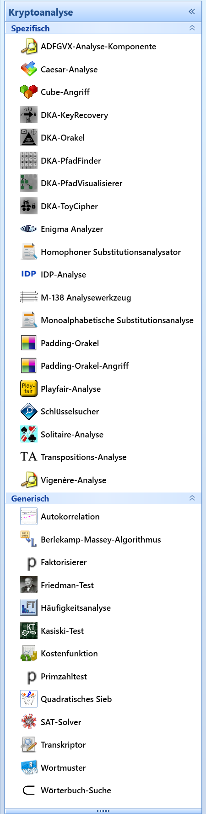

Das JCT-Hauptmenü Analyse (in der Standard-Perspektive) hat 8 Einträge, die sich entweder auf die Analyse von Texten oder das Brechen einiger weniger klassischer Chiffren beziehen.
Im Internet finden Sie verschiedene Namen für Implementierungen von Kryptoanalyse-Algorithmen: Analysierer, Analyzer, Solver oder auch Breaker.
Eine Visualisierung des ACO-Algorithmus zur Analyse von einfachen Transpositions-Chiffren finden Sie im JCT-Hauptmenü Visualisierungen.
Fortgeschrittenere Analysierer, darunter die weltweit führenden Algorithmen von George Lasry für Enigma, Doppelspalten-Transposition und homophone Chiffren, sind in CrypTool 2 (CT2) implementiert. CT2 enthält auch mehrere Analysierer gegen moderne Chiffren – siehe den folgenden Screenshot aus CT2.

Anmerkung
Einen tabellarischen Überblick über alle kryptografischen Funktionen in allen CrypTool-Programmen (inclusive JCT) finden Sie auf der CrypTool-Website im Funktions-Überblick.